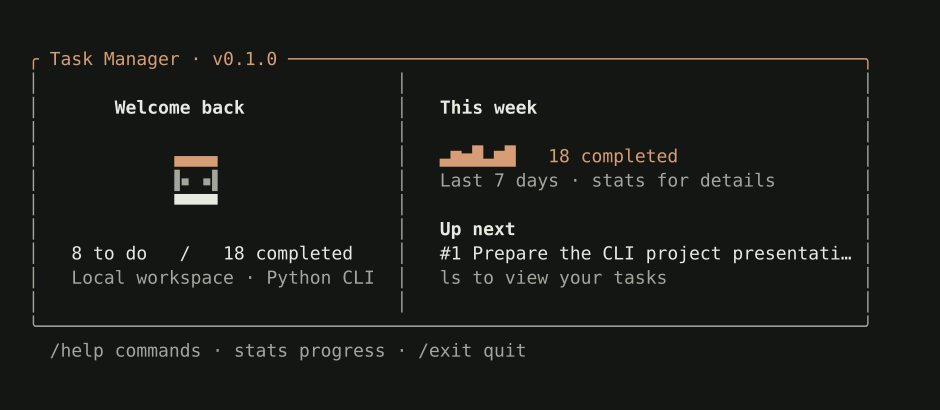
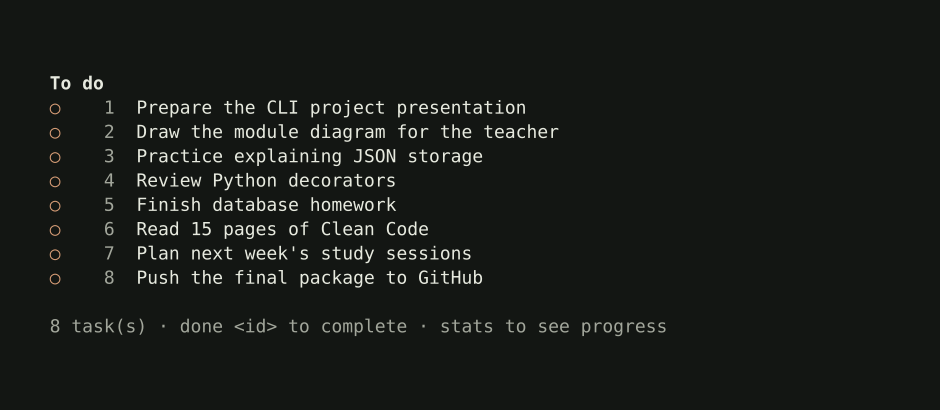
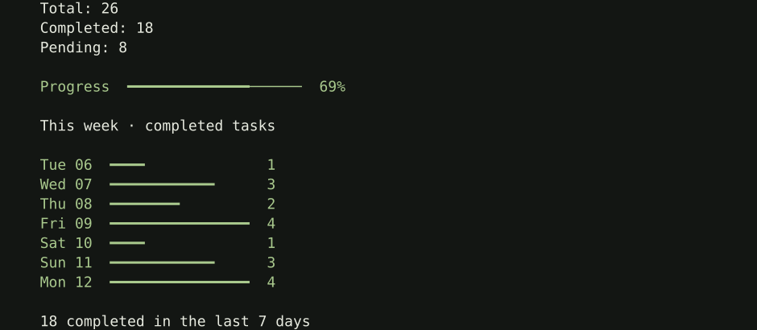

Documentation / Python package
Task Manager
A small task list that lives in your terminal.
Add something you need to do, come back to it later, and mark it complete. Task Manager keeps your list in a local JSON file and gives you a simple view of what you’ve finished during the week.
You can use it one command at a time or open an interactive session. It’s written in Python, with no runtime dependencies.
Installation
You’ll need Python 3.10 or newer. On macOS or Linux, open a terminal and run:
mkdir test-my-package
cd test-my-package
python3 -m venv .venv
source .venv/bin/activate
pip install student-task-manager-cli
task --helpInstalling on Windows
Use PowerShell to create and activate the environment:
mkdir test-my-package
cd test-my-package
py -m venv .venv
.venv\Scripts\Activate.ps1
pip install student-task-manager-cli
task --helpThen run task to open your workspace. In a new terminal, return to this folder and activate .venv again. Use deactivate when you’re finished.
Using Task Manager
Running task without arguments opens the interactive workspace. The welcome screen shows your next task, the number of finished tasks, and a small activity chart.
At the ❯ prompt, try:
❯ add Finish the Python assignment
❯ add Take a lunch break
❯ ls
❯ done 1
❯ statsTitles can contain spaces without quotes. Tab completes commands, and ↑ / ↓ recalls history on terminals with readline support. Type /help for help and /exit to leave.
For a single command from your usual shell, include the task prefix and quote titles that contain spaces:
task add "Finish the Python assignment"
task ls
task done 1Commands
These examples run from your shell. Inside the interactive workspace, you can leave off the task prefix.
| Command | What it does |
|---|---|
task add "Write report" | Add a task |
task ls | List pending tasks |
task ls --done | List completed tasks |
task ls --all | List every task |
task done 1 | Mark a task complete |
task undone 1 | Make it pending again |
task update 1 "New title" | Rename a task |
task show 1 | Show its details |
task delete 1 | Delete a task |
task clear | Delete completed tasks |
task stats | Show weekly progress |
task demo | Open a sample workspace |
task --help | Show command help |
list and ls are interchangeable. For help with one command, use task <command> --help.
Task numbers can change after deletion or a status change. Run
task ls --allto check the current IDs before editing an older task.
In interactive mode, clear and cls clear the screen. To remove completed tasks there, use clear-completed. Type home to return to the welcome view.
Terminal preview
To explore the interface before adding your own tasks, run task demo. It opens a temporary workspace with 8 pending and 18 completed tasks. Changes are discarded when you leave.


Task list and weekly progress




The chart follows your local timezone and counts completed tasks still in your list. Deleting a completed task removes it from the chart too. Older tasks without completion dates count toward the total, but not the daily chart.
For a preview without opening an interactive session, use task demo --preview.
Your data
Your tasks are saved in a single tasks.json file. Its default location depends on your operating system:
- macOS
~/Library/Application Support/task-manager/tasks.json - Linux
~/.local/share/task-manager/tasks.json
Uses XDG_DATA_HOME when set. - Windows
%APPDATA%\task-manager\tasks.json
Set TASK_MANAGER_DATA_DIR to use a different folder. The file is created on the first save. If it contains invalid JSON, the app reports an error and leaves it intact.
Terminal preferences
Set TASK_MANAGER_NO_ANIMATION=1 to disable motion, or NO_COLOR=1 for plain output. Redirected output already skips colors and animations.
Development
The source is on GitHub. From a local checkout, create and activate a virtual environment, then install the package in editable mode:
python -m pip install -e .
python -m pip install pytest
python -m pytestThe code lives in src/task_manager/. Both interactive and single-command modes use the same task operations. Tests use temporary storage, so they don’t change your personal list.
For the full project guide, read the README.